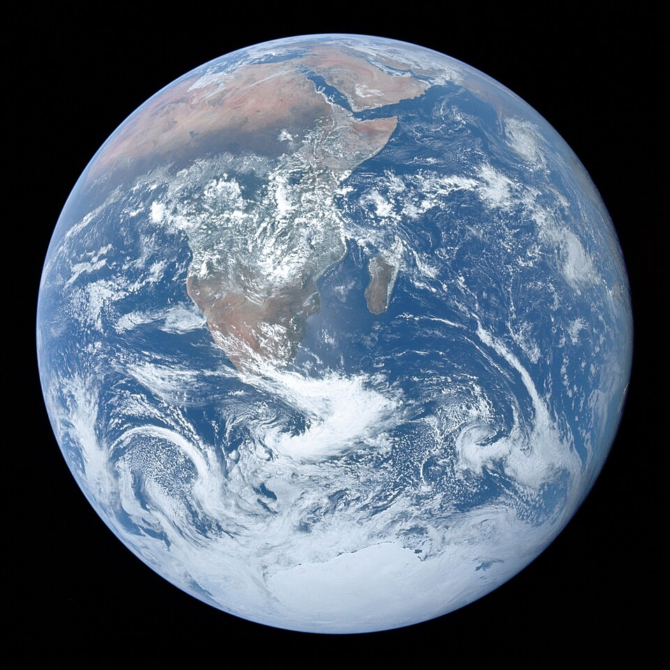

⭐Головна | 🌍Внутрішні планети | 🪐Зовнішні планети | ℹ️Про проект

Земля — третя планета від Сонця та єдина відома планета у Всесвіті, на якій існує біологічне життя. Вік Землі складає близько 4,54мільярда років.
Відстань від Сонця: 149,6 млн км
Діаметр: 12 742 км
Тривалість доби: 24 години
Тривалість року: 365,25 доби
Супутники: 1 (Місяць)
Земля розташована у так званій «зоні Ґолдилокс» — зоні, де температура дозволяє воді існувати в рідкому стані. Крім того: